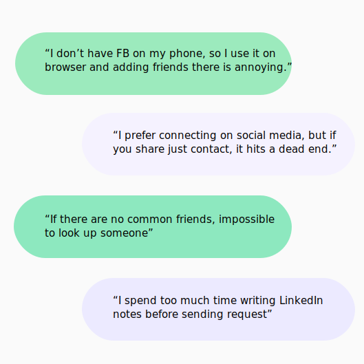
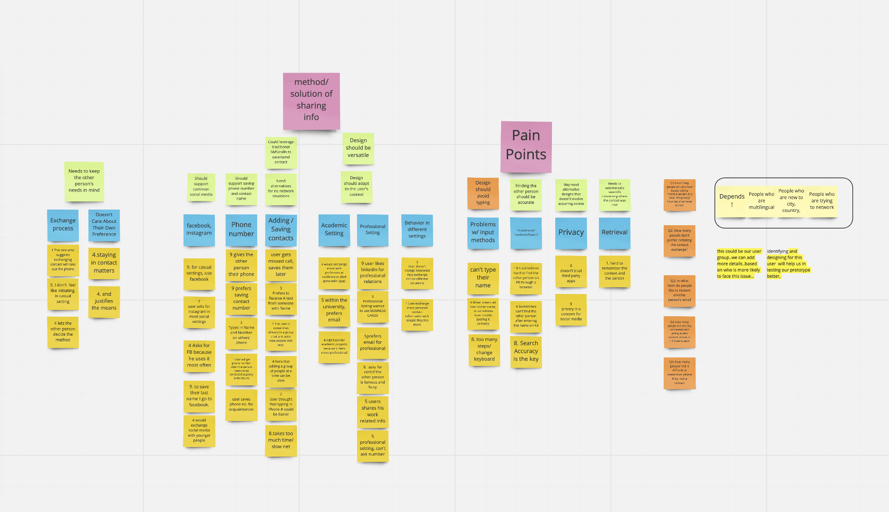
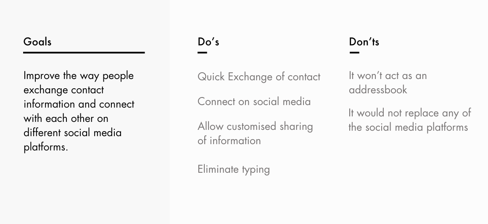
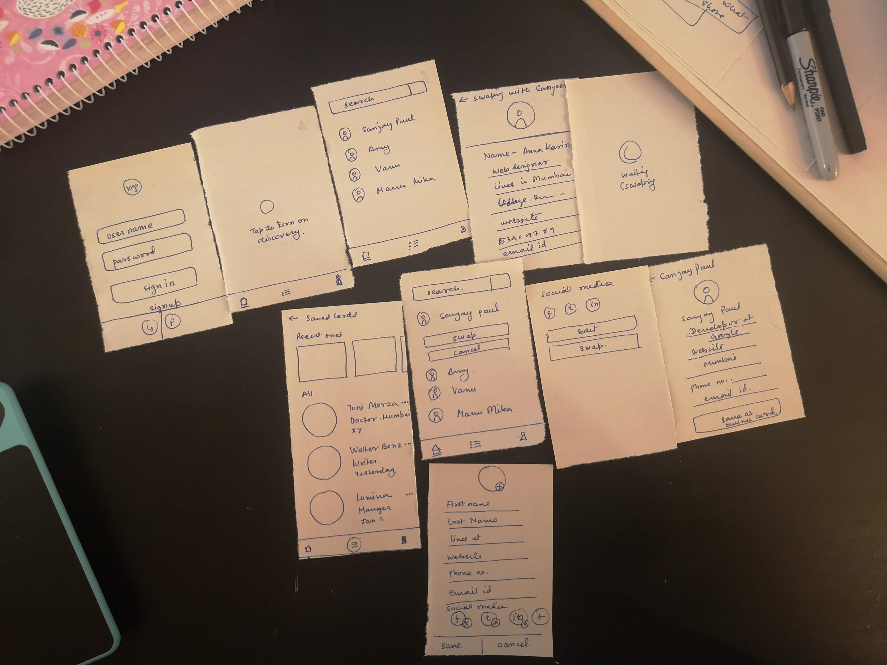

Handl - Swapping Contacts Quicker
UXD — Aug'19 - Dec'19 — My Role — Researcher & Experience Designer
Winner of Convergence Innovation Competition, Georgia Tech

Overview
What is the problem?
Suppose you are at a party, attending a conference or a networking event. I know you can carry your business card, resume, etc., but we all can agree that we do have to awkwardly ask the other person if they are on Linkedin or Instagram or if we can have their number. Not just that, coming from different places, it's possible that we might not even find each other in the search results if there are no common friends.
Research Question?
How did we solve this?
We came up with a mobile app that utilised nearby discovery to let people exchange contacts and their social media handle. Users saved their social media handles and contact information in their profile which basically acted like digital business cards.You can control what you want to share on the go and use the same profile for different situations. Organise your contact in one place and swap with people real quick asynchronously.
01
Organise Contacts and all social media accounts in one place.


02
Discover nearby people. Share contacts asynchronously.
03
Control what you share on the go!
Process & Timeline
Understanding the Problem
Hypothesis
Once in awhile exchange of contact or connecting with someone, might not seem like an issue, but in social gatherings meant for networking where people meet new people, the number of social media choices can cause decision lag, distraction, and hassle. We conducted primary and secondary research to test our hypothesis before setting out to design.
First, things first - verifying the hypothesis!
(Semi-structured interviews)
We conducted semi-structured interviews with 9 users between the ages of 22 and 29. All these users were students and were new to the city, looking to network for jobs and some often attended academic conferences.

Now was the time to synthesise the results
For this activity, we all together synthesized the results through affinity mapping.
Finally we had our users' persona!
These persona's catered to two broad scenarios - professional gathering and informal gathering.

Now was the time for storyboarding user's current journey.
I drew a lot of possible scenarios to dig deeper into the nuances of user's current journey.
Next, we set out to see if there are solutions out there!(Comparative Analysis)
We started with competitive analysis and studied the existing platforms and how they make the exchange of contact information easier. Although these apps catered only to their own services, the study helped us understand their approach and identify problems and opportunities.
We also studied apps which tried to cater to all the platforms together and emphasized on easier exchange. Most applications of this kind were business card focused and lacked any user-centred approach in their solutions.


Insights
We got some key insights and focus areas for our solution.

Consolidated Design Implications
Brainstorming & Design Guidelines
The biggest challenge for the team members was to not jump on the tech solution and let the research inform the solution. We were successful in coming up with three approaches and showed them with the help of user journey for comparison.
Functionalities
Based on the stories we decided the core tasks that our solution will allow users to complete.

Voice Assistant

Nearby Discoverability

QR Based Contact Scanning

We then evaluated all these ideas against our design implications from the last session, and do's and don'ts. We decided to implement the discoverability idea which wasn't very different from QR though the way of interactions and accomplishing the task differed.

Now was the time to make the user flow and wireframes
I started with paper prototype to explore the interaction flow. Once we finalised the interaction flow I drew wireframes to inform our mid-fidelity prototype.


We got then feedback on our wireframes
I had the following goals when we set out to get user feedback.
High-fidelity Prototype
For the first iteration I focused on designing the core features and flows of the application so that we could test if the design was simplifying the process. I used Adobe XD to create the hi-fidelity prototype.
Evaluation
User Testing Process
My teammate and I conducted think-out loud sessions with 6 users with different goals of networking. We introduced our goal and the concept and described the activity to help ease them up. We then described the scenario, and let users use the app while thinking aloud. Upon completion of the tasks, we asked them to reflect and fill up a questionnaire.
Feedback & Re-designing the Interaction
Iteration 1
Nearby people

Iteration 1
Save to contact and business card

Final Prototype
We made changes in visual design and some of the flows addressing the concerns and evidences from the user testing. The final prototype shows nearby users who can readily share their information.
Lessons Learned
Storyboarding any journey, either an existing situation or the solution can bring up very important subtle issues that one might not otherwise anticipate. In this project, we drew a lot of stories for different settings and contexts to help the team empathize with different user persona. The storyboarding was also necessary to have the entire team on the same page especially when we had three developers and two designers.
We also realized that an easy and efficient task is not necessarily the one that takes less time it is also about cognitive load. Even if we do not reduce the time taken in exchange of contact drastically, reducing the inertia and uneasiness and a feeling of smooth completion of task matters.
Designed and crafted with 
Copyright © 2020 pragati singh